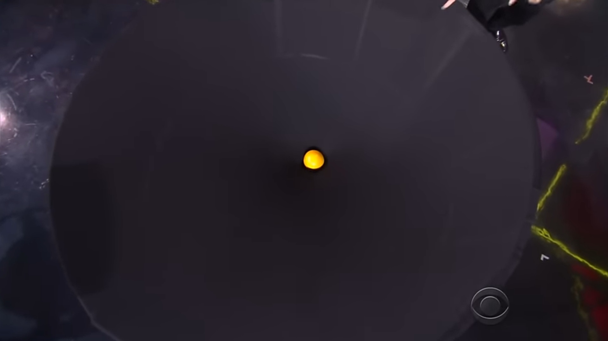
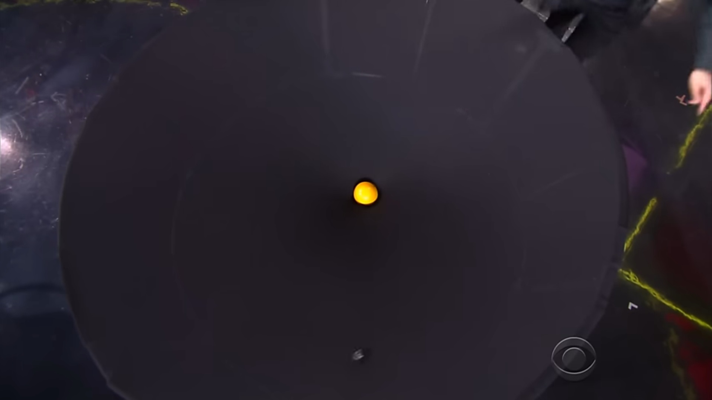
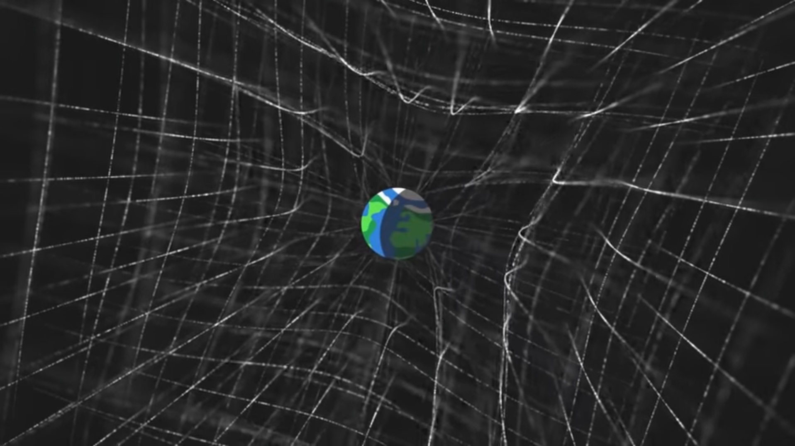

10 Desember 2024
Pernah mikir gak, kenapa jatuh itu kebawah? Para filsuf Yunani kuno telah mengamati bahwa benda-benda selalu jatuh kebawah, bergerak menuju bumi meski pada masa itu belum diketahui alasannya. Hingga Isaac Newton menemukan sesuatu tentang hal itu.
Dikutip dalam buku 200 Tokoh Super Jenius Penemu dan Perintis Dunia oleh Iswara N. Raditya (2012:275) penemuan gaya gravitasi oleh Isaac Newton sesungguhnya berawal dari Newton yang kejatuhan buah Apel lho! Hal yang lazim itu dipikir secara seksama oleh Newton. Disitulah awal mula Gravitasi dikemukakan.
Newton menjelaskan, "Setiap partikel di alam semesta saling tarik menarik dengan partikel lain yang besarnya sebanding langsung dengan hasil kali massa kedua partikel tersebut, dan berbanding terbalik dengan kuadrat jarak antara kedua massa tersebut." Yang mudahnya bisa dibilang bahwa gaya gravitasi menyebabkan semua benda akan selalu ditarik ke arah pusat bumi.
Kali ini kita gak akan bahas mengenai Hukum Gravitasi Newton, yang sudah umum dikenalkan di sekolah. Tapi kita akan bahas mengenai Gravitasi dari persepsi Albert Einstein, salah satu tokoh ilmuwan terkemuka dunia.
Albert Einstein mengungkapkan teori Relativitas pada 1915. Teori Relativitas Umum menjadi teori yang menentang teori Gravitasi milik Newton yang sudah diterima kurang lebih 229 tahun itu.
Dalam Relativitas Umum Einstein, massa dapat menyebabkan kelengkungan ruang waktu, dan gravitasi adalah akibat dari kelengkungan ruang waktu itu sendiri. Objek-objek yang berada di sekitar massa tersebut akan bergerak mengikuti kelengkungan ruang waktu yang diakibatkan massa itu. Jika sebelumnya ruang dan waktu memiliki dimensi terpisah, maka di teori ini ruang dan waktu adalah pasangan.
Contohnya adalah bola besar yang diletakkan di sebuah permukaan kain. Bola tersebut akan menyebabkan lengkungan pada permukaan disekitarnya.
Dan jika sebuah bola kecil diletakkan, maka bola kecil otomatis akan bergerak mengikuti lengkungan pada permukaan kain itu. Inilah yang dimaksud oleh Einstein.
Dengan skala yang lebih kompleks, massa akan menyebabkan lengkungan yang terjadi dalam 3 dimensi ruang dan 1 dimensi waktu.
Contoh nyata dari teori tersebut adalah tata surya kita. Bola besar tersebut ibaratnya adalah Matahari, dan bola kecil adalah bumi atau planet-planet lain. Seperti sistem tata surya, planet-planet kecil mengorbit Matahari. Hal itu dikarenakan massa Matahari yang menyebabkan kelengkungan itu.
Bahkan, kelengkungan ruang waktu itu menyebabkan cahaya sekalipun tak dapat bergerak lurus ketika melewati Matahari. Untuk bisa membuktikan bahwa teori Einstein benar atau salah, Eddington yang dibantu oleh Dyson merancang dua ekspedisi pengamatan Gerhana Matahari Total 29 Mei 1919. Jika Einstein benar, seharusnya terjadi perubahan posisi bintang saat terjadi gerhana Matahari.
Hasilnya, citra yang dipotret Eddington memperlihatkan pergeseran posisi bintang 1,61 detik busur. Kesimpulannya, pembelokan cahaya memang terjadi dan teori relativitas terbukti! Pengamatan itu menjadi sejarah penting bagi perjalanan teori relativitas umum yang membawa kita untuk memahami alam semesta dengan lebih baik.
Teknologi yang semakin maju membuat berbagai prediksi Relativitas Umum Einstein kembali terbukti. 100 tahun kemudian, para ilmuwan berhasil mendeteksi gelombang gravitasi yang telah diprediksi oleh Einstein. Gelombang itu berasal dari tumbukan 2 blackhole (lubang hitam). Gelombang gravitasi itu semacam gangguan pada ruang waktu. Hal ini disebabkan oleh penggabungan 2 massa, yang menyebabkan keluarnya semacam gangguan ruang waktu yang menjauhi massa itu sendiri.
Foto pertama bayangan lubang hitam pun berhasil diambil pada 2019. Foto lubang hitam di pusat galaksi M87 memperlihatkan bahwa cahaya mengalami pembelokkan disekitar massa yang besar. Dan lagi-lagi, Einstein benar.
Nao.
Sumber informasi :
https://www.detik.com/edu/detikpedia/d-6081427/kenalan-dengan-teori-relativitas-einstein-dan-bukti-kebenarannya
https://www.kompas.com/skola/read/2020/03/06/131500669/hukum-gravitasi-newton
https://langitselatan.com/2019/06/14/100-tahun-pengamatan-eddington/
https://youtu.be/Veqkg4hGn08?si=xb01837m72qv5KjB
Sumber gambar :
https://youtu.be/0jjFjC30-4A?si=GatV0G2fm8Oo8uis
https://youtu.be/wrwgIjBUYVc?si=wzgDAPQfriCnUknl